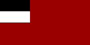
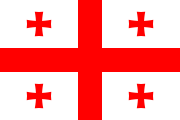

missie
#lostbalcony is een online initiatief dat waarschuwt voor het verlies van Georgië als het balkon van Europa. Het risico dat Georgië in 2022, in de nasleep van een wrede oorlog in Oekraïne, zijn aspiraties om lid te worden van de Europese Unie (EU) zal vergeten, zou een historische vergissing zijn. Net als Oekraïne en Moldavië maakt Georgië deel uit van Europa.
Georgië wordt vaak het "balkon van Europa" genoemd vanwege zijn ligging aan de rand van Europa, tussen Europa en Azië, en heeft nauwe historische banden met Europa.
 De verspreiding van Homo erectus van Afrika naar Europa is bewezen door huidige opgravingen in Georgië. Deze laten zien hoe vroege mensen 2 miljoen jaar geleden in Dmanisi - in het zuiden van Georgië - te vinden zijn.
Een andere vorm van Europees cultureel erfgoed is de wijnbouw, die een lange traditie heeft in Georgië en teruggaat tot 6000 jaar voor Christus. Chr. heeft sporen achtergelaten. Opgravingen tonen de teelt van gecultiveerde wijnstokken, die vandaag de dag nog steeds worden verbouwd.
De verspreiding van Homo erectus van Afrika naar Europa is bewezen door huidige opgravingen in Georgië. Deze laten zien hoe vroege mensen 2 miljoen jaar geleden in Dmanisi - in het zuiden van Georgië - te vinden zijn.
Een andere vorm van Europees cultureel erfgoed is de wijnbouw, die een lange traditie heeft in Georgië en teruggaat tot 6000 jaar voor Christus. Chr. heeft sporen achtergelaten. Opgravingen tonen de teelt van gecultiveerde wijnstokken, die vandaag de dag nog steeds worden verbouwd.
Hoewel Georgië's relatie met Rusland als belangrijk buurland in de Kaukasus en Georgië als onderdeel van de Sovjet-Unie de geschiedenis van Georgië in de 19e en 20e eeuw hebben gevormd, is dit geen reden om Georgië uit te sluiten van de Europese familie.
Georgië heeft altijd een hechte relatie met Europa gezocht en de voormalige zwakke geostrategische redenen zouden in de 21e eeuw moeten worden vervangen:
 Al tussen 1713 en 1716 bezocht Sulhan-Zaba Orbeliani, een Georgische prins, monnik, diplomaat en schrijver, namens de Georgische koning de paus en de Franse koning Lodewijk XIV om Georgië met West-Europa te verbinden. Ook de buitenlandse politiek van de latere koning Erekle II (7 november 1720 – 11 januari 1798) was sterk Europees georiënteerd. Hij zocht allianties met verschillende Europese regeringen tegen Perzië en het Ottomaanse Rijk, maar vond geen steun. Al tussen 1713 en 1716 bezocht Sulhan-Zaba Orbeliani, een Georgische prins, monnik, diplomaat en schrijver, namens de Georgische koning de paus en de Franse koning Lodewijk XIV om Georgië met West-Europa te verbinden. Ook de buitenlandse politiek van de latere koning Erekle II (7 november 1720 – 11 januari 1798) was sterk Europees georiënteerd. Hij zocht allianties met verschillende Europese regeringen tegen Perzië en het Ottomaanse Rijk, maar vond geen steun. |
|
 Pas in 1783 tekende koning Erekle II een verdrag met de Russische tsarina Catharina II om hem te beschermen tegen de Perzische horde en zijn troepen, waarin hij zich ertoe verbonden het Russische protectoraat te erkennen en zijn strijdkrachten in dienst te stellen van de Russische Rijk.
Bij de Slag bij Krtsanisi moest Georgië het echter alleen opnemen tegen de Perzen zonder Russische steun, en de Georgiërs werden verslagen. Pas in 1783 tekende koning Erekle II een verdrag met de Russische tsarina Catharina II om hem te beschermen tegen de Perzische horde en zijn troepen, waarin hij zich ertoe verbonden het Russische protectoraat te erkennen en zijn strijdkrachten in dienst te stellen van de Russische Rijk.
Bij de Slag bij Krtsanisi moest Georgië het echter alleen opnemen tegen de Perzen zonder Russische steun, en de Georgiërs werden verslagen.
|
Maar omdat Rusland in de 19e eeuw zijn invloedssfeer in de zuidelijke Kaukasus verder kon uitbreiden, was een onafhankelijke Georgische staat onmogelijk.
Pas bij de ineenstorting van het Russische rijk in de Februarirevolutie van 1917 werd in 1918-1921 de eerste Democratische Republiek Georgië (DRG) opgericht.
Op 16 februari 1921 werd de DRG bezet door het Rode Leger en tot eind 1991 opgenomen in de Sovjet-Unie als de Georgische Socialistische Sovjetrepubliek.
Voor Georgië werd het herwinnen van de onafhankelijkheid gevolgd door een "donkere" periode met verkiezingsfraude, wijdverbreide corruptie, misdaad en stagnatie van de economie op een zeer laag niveau, maar sinds de jaren 2000 is de wens om onomkeerbaar onafhankelijk te worden van Rusland in Georgië's buitenlandse beleid maken.
Een geopolitiek conflict dat, met aan de ene kant de veiligheidsbelangen van Rusland en de toenadering die Georgië tot het Westen, de NAVO, de VS en de EU nastreeft, heeft via conflicten binnen Georgië als de Kaukasusoorlog in 2008 aangetoond dat Georgië historisch gezien opnieuw alleen gelaten.
Ook al staat de toelating van Georgië tot de EU vandaag misschien niet op de agenda, gezien de huidige politieke situatie, het land mag niet worden overgelaten aan de willekeur van zijn grote buur.
Samen wil dit initiatief een politiek signaal afgeven tegen Georgië als #lostbalcony met foto's van balkons in Georgië. Georgië als kandidaat voor de EU is een politiek teken en moet niet alleen worden gezien als een onbeschrijfelijk mooi .jpegaubsland aan de rand van Europa, maar als onderdeel van Europa met een toekomst in de EU.